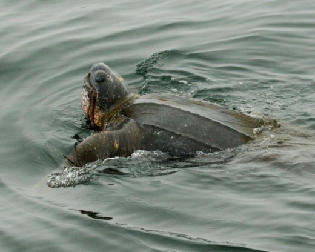
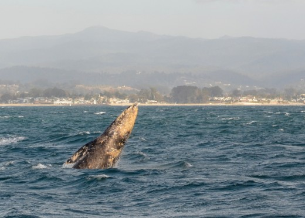

Any Dollar amount!
For any Stagnaro Trip
Call (831) 427-0230
Gift certificate doesn't guarantee a spot on a specific trip. Reservations required
By Jason Hoppin | jhoppin@santacruzsentinel.com @scnewsdude on Twitter
Posted: 08/14/2014 04:01:16 PM PDT2 Comments
MOSS LANDING >> The music may have stopped, but the show never really ends.
Humpback whales aren’t getting the same worldwide attention as a few weeks ago, when they practically seemed to be knocking on the doors of beachfront homes. Lunchtime gawkers at the Santa Cruz Municipal Wharf got an eyeful, as did visitors to Moss Landing State Beach, where the whales came close enough to shore that they seemed eye-to-eye with beachgoers, including a few confused dogs and horses.
But they’re still out there, in abundance, entertaining visitors from across the globe.
“It was amazing because at one moment you don’t know where to see, there’s a lot to look at,” said Laetitia David, who lives outside Versailles, France, and is touring the western U.S. with her husband, Alain.
The couple took a tour this week with Moss Landing-based Sanctuary Cruises, one of several whale-watching boats operating out of the region that have been teeming with passengers.
The giant schools of anchovies that seem to yawn from shore out to the horizon have dissipated, a phenomenon that drew more whales but that seems to have been punctuated by the unfortunately stinky harbor die-off in Santa Cruz.
There are always more visitors to Monterey Bay, and last weekend Monterey Bay Whale Watch’s posted pictures of killer whales leaping out of the water in its Facebook page. Of course, birds, seals and dolphins can always be found in abundance.
You might even see another rarity of you’re near the water these days – surfers without wetsuits. Water temperatures at the National Oceanic and Atmospheric Administration’s Monterey Bay buoy are in the mid-60s this week, well above normal even for late summer.
And that buoy is 30 miles offshore. Near-shore temps are certain to be higher, all the result of calm skies that have ground to a halt the phenomenon known as upwelling, where winds churn ocean waters, bringing cooler, nutrient-rich deep sea water to the surface.
“It’s just a lack of northwest wind, which gives us upwelling along the coast,” National Weather Service forecaster Steve Anderson said. “The cold water isn’t coming to the surface, which allows the water temperature to warm up.”
The warm water has nothing to do with El Niño, Anderson stressed.
Santa Cruz Whale Watching’s Ken Stagnaro said the lack of upwelling have kept the krill counts low, which could be why there haven’t been reports of blue whales so far.
But Stagnaro said there’s still plenty to see on the water. “We had sightings of killer whales feeding on a sea lion a few days ago,” Stagnaro said.
The show must go on, after all.
SOURCE: Santa Cruz Sentinel
This entry was posted on August 15, 2014 by jennyo
Book your trip today! Book online now or call (831) 427-0230

Maria Grusauskas
Last week, passengers on a Santa Cruz Whale Watching boat (while whale watching in Monterey Bay) got to see a rare and special site: a Pacific leatherback sea turtle feeding on a brown sea nettle, or jelly fish.
According to local marine biologist, Dr. Wallace J Nichols, the leather back in the picture appears to be around 1,000 pounds.
“I’d say it looks like it’s healthy and eating well! The leatherbacks encountered in our bay are usually nice and fat, ready for the long swim back to Indonesia,” said Dr. Nichols.
The leatherbacks seen in local waters travel around 6,000 miles to feed off the coast of California, migrating from Indonesia where they nest.
The chances of seeing the endangered leatherbacks in our backyard may be on the rise in the coming weeks, according to Nichols, who says they typically migrate up the coast during midsummer through fall.
There were other reports last week of leatherback sitings in the waters around Monterey, Moss Landing and Half Moon Bay, according to a report in the San Francisco Chronicle.
The sea turtles appear to following a bloom of jelly fish, their number one food source, north through the Monterey Bay National Marine Sanctuary.
“I think that most people don’t realize that we have leatherback turtles in the bay that come from Indonesia, and it’s nice to highlight that,” said Wallace J Nichols, just after seeing the two interactive sea turtle exhibits at Santa Cruz’s Monterey Bay National Marine Sanctuary on Monday.
Nichols is on the board of the Turtle Island Restoration Network, an advocacy group working to protect endangered marine life, and he’s also on the board of Save Our Shores, the local nonprofit group largely responsible for getting single use plastic bags banned in the Santa Cruz County.
Plastic bags are known to be regularly injested by sea turtles mistaking them for their favorite food: jellies. In fact its very hard even for a human being to tell the difference between a jelly and a plastic bag floating underwater.
The leatherback turtle has been listed as an endangered species since 1970, and some researchers estimate that their population has declined 95 percent over the last 25 years.
According to researchers at Turtle Island Restoration Network, they could disappear completely in the next 5 – 30 years, even though they have survived unchanged for over 100 million years.
The declining numbers of leatherbacks are largely due to poaching, entanglement in shrimp nets or long line hooks, destruction of nesting beaches, pollution and plastic debris in the ocean. Rising sea levels are also impacting nesting beaches and the food resources of sea turtles, according to researchers at Turtle Island Restoration Network.
Leatherback Photo Credit: John Warren, courtesy of Captain Ken Stagnaro, SantaCruzWhaleWatching.com
This entry was posted in Press Coverage and tagged humpback whales, humpbacks, monterey california whale watching, monterey whale watching, santa cruz on June 14, 2014 by jennyo.
Book your trip today! Book online now or call (831) 427-0230

NOAA marks the best whale watching sites on coast
Monterey Bay topping the list for activity
MONTEREY, Calif. – NOAA’s Office of National Marine Sanctuaries and The Whale Trail announced new coastal sites in California where the public can view orcas and other marine mammals from shore, like the Monterey Bay.
Viewing sites near San Francisco, Santa Cruz, and Monterey will be established and outfitted with interpretative signs describing the types of whales and other wildlife that can be seen at each location as well as information about the area’s distinguishing characteristics.
The sites will be added to the Whale Trail website.
The inaugural viewing sites include Point Reyes, Lighthouse Point in Santa Cruz, and Point Lobos State Reserve in Monterey County. Additionally, the Crissy Field visitor center for Gulf of the Farallones National Marine Sanctuary, Aquarium of the Bay in San Francisco, Monterey Bay National Marine Sanctuary’s (MBNMS) Exploration Center in Santa Cruz, and MBNMS Coastal Discover Center in San Simeon will also be added to the Whale Trail website as venues where the public can learn about whales and other marine mammals.
This year has been a particularly good one for whale activity, and whale-watching companies say they are doing quite well this year.
Article source: KION 5/46
This entry was posted in Press Coverage and tagged humpback whales monterey, monterey whale watching, santa cruz california on May 13, 2014 by jennyo.
Book your trip today! Book online now or call (831) 427-0230
A few years back we hosted John Blackstone and his CBS News crew on board Velocity. This video features amazing footage of friendly humpback whales curious about our boat and tourists. Captain Ken Stagnaro and our naturalist Maureen Gilbert give us some great insight into the habits of Monterey Bay wildlife.
Humpback whales return each spring to their feeding grounds in Monterey Bay and remain in our local waters through November, sometimes longer! Year-round whale watching tours depart from the Santa Cruz Yacht harbor to see whales, dolphins, seals and otters, and more. As Maureen says, “You are never the same after you see a whale in the wild.”
This entry was posted in Press Coverage and tagged California tours, humpback whales, humpbacks, monterey california whale watching, monterey whale watching, oracs, santa cruz, santa cruz whale watching, whales on March 7, 2014 by jennyo.
November 2013 ABC News story and wonderful footage from one of our sister boats in Monterey Bay. Monterey whale watching at its finest!
This entry was posted on March 7, 2014 by jennyo.
Book your trip today! Book online now or call (831) 427-0230

Special to the Sentinel
POSTED: 01/03/2014 03:53:13 PM PST
The year 2013 saw an unusually busy humpback whale season on Monterey Bay, driven by the upwelling of nutrient-laden waters feeding plankton, krill, anchovies and other small fish which attracted them.
While there are still humpbacks in the bay, California gray whales have begun their twice-a-year glide through Central Coast waters as they first head south to where they rest, breed and give birth in warmer Mexico, then return north to their feeding grounds off Alaska.
Gray whales were first spotted migrating through Monterey Bay in December. They’re best observed from a boat run by an experienced whale watching captain and crew. Ken Stagnaro, who owns the Velocity that takes guided whale tours out of the Santa Cruz Harbor, says that while humpbacks are more animated when they visit the Monterey Bay to feed, the grays use the central coast as a thoroughfare and stay focused on their long trek. But their speed and force is constant, said Stagnaro, so finding and following them is easier. “They are very majestic to watch, especially when they breech,” he says.
Their southern destinations are balmy Baja California waters where females can mate, give birth, then nurse and nurture their young at spots including Laguna San Ignacio, Laguna Guerrero Negro, Laguna Ojo de Liebre and Magdalena Bay. Mating can also happen during their southern migration. While they can sometimes be friendly to humans in Baja California, they’re not as approachable during mating and birthing.
Their gestation period is about a year after which calves are born live, most at around 15 feet in length and weighing 1,500 pounds. They put on weight and grow as they nurse on mother’s milk, more than half of which is fat. They can ultimately grow up to 50 feet, weigh as much as 40 tons and live 80 years. Their population is believed to be as high as 22,000, up from previous years.
Around the middle of February, they head north to Alaska for their summer feeding, primarily on a small crustacean called “amphipod macrocephela” which is nourished by algae that drops from sea ice in the Bering and Chukchi seas. They’ll also eat smaller amphipods, which can look like a type of shrimp under a microscope. If they do need to eat during their migration they’ll forage in the sea floor’s mud, sand and silt.
The best period for viewing the northward migration is February through May. This portion of their journey is more social and leisurely than the southbound trip. Mothers and calves can be spotted in April and May, and sometimes they travel close enough to shore that they can be seen from high points along the coast.
Their coastal highway gets busy as the southern and northern migrations coincide during February, although the southbound whales travel further offshore than the northbound ones do. They travel from 38 degree waters to those that are a balmier 70 degrees. When they leave Alaska they can have up to 8 inches of blubber to sustain them on journey and when they return they have just 2 to 3 inches left. Mothers need more, said Stagnaro, to nurse their young on the trip north.
You can see them as they perform their annual ritual — now as they head south, and later if you want to see them head north.
Dan Haifley is executive director of O’Neill Sea Odyssey.
This entry was posted in Press Coverage and tagged gray whale, gray whales, monterey california whale watching, monterey whale watching, santa cruz, santa cruz whale watching, stagnaro on January 7, 2014 by jennyo
By Jason Hoppin | Santa Cruz Sentinel
POSTED: 12/28/2013
MOSS LANDING.– Just when you think nature couldn’t impress you more, something like 2013 happens.
This was year the Monterey Bay turned the dial up to 11, producing a months-long carnival of lunging humpback whales, bird clouds, dolphin wizardry, frenzied sea lions, playful killer whales and even visits from marine royalty — blue whales.
“Best year I’ve ever seen and best year anybody’s seen that I’ve talked to,” said Giancarlo Thomae, a 25-year-old UC Santa Cruz graduate whose near-daily forays onto the bay, by boat or kayak, helped document Mother Nature’s best production in a long time.
The wildlife display on Monterey Bay was selected by Sentinel staff as a top news-maker in 2013.
The true stars were hundreds of humpback whales that lingered for months in the northeast part of the bay, with some here even still. People crammed tour boats, hopped on paddleboards and leaned out over wharf railings for a glimpse, and were almost universally rewarded with one.
The spectacle was due to the presence of huge numbers of anchovies, epic schools that boat captains said would go on for miles. Their numbers were such that a school even rushed in to the Santa Cruz Small Craft Harbor, leading to an October die-off that fouled the air for weeks.
Why the anchovies? People cited a healthier ocean, a lack of sardines or predators such as salmon and a cool-water cycle coupled with normal upwelling of nutrients from the underwater Monterey Canyon.
“The canyon is just basically a big giant doorway to the open ocean, and it’s right here on our doorstep. That’s what makes it so special,” said Ken Stagnaro of Santa Cruz Whale Watching. “We’re pretty lucky to be here. You get these animals up and down the coast, but not really condensed like this.”
At the Monterey Bay Aquarium, first-hand looks at marine life began to rival the interpretive exhibits, the open sea becoming an attraction alongside jellyfish and kelp forests. Guests flocked to an outdoor pavilion for a look at birds, sea otters and especially abundant whales.
“We have a new interpretive station at the Aquarium. We call it ‘Today on the Bay.’ A lot of us said one of the best exhibits at the Monterey Bay Aquarium is the Monterey Bay itself,” said Jim Covel, director of guest experience training and interpretation. “We’ve got a front-row seat here.”
Photographers such as Thomae and Bonny Doon’s Jodi Frediani procured amazing shots of the activity. Through the Internet and social media, word spread and the photos became apertures into life on the water, a rabbit hole through which the whole world seemed to want to jump.
“Let’s put it this way: before all this happened, there were times when we barely had enough people to go out. It really blew up,” said Thomae, who worked for Sanctuary Cruises Whale Watching this summer. “We had people calling us from Hong Kong, Sydney, all over the world, saying, ‘Oh the whales are thick? I want to go.'”
One Thomae photo showing a local kayak guide, Karen Hatch, framed by the body of a whale went viral. It was featured everywhere from CBS’ “This Morning” to the German news magazine Der Speigel.
Despite widespread TV coverage, tour captains say the biggest impact came when the most traditional of all media, The New York Times, weighed in. The newspaper produced a popular multimedia story on Monterey Bay.
“You know what? Hands down, nothing got the response like when the New York Times article came out,” Stagnaro said. “The phones just went crazy.”
Once near extinction, humpbacks are a species on the rebound. That is one reason Stagnaro thinks they’re here to stay year-round, as long as there’s enough food.
“I don’t expect it to change anytime soon,” he said.
Even around Christmas, the show continued. Normal patterns of migratory grey whales are coming through, but several humpbacks remain in the bay, along with a handful of killer whales.
“Weather permitting, you could see whales for pretty much 365 days in the Monterey Bay during the year,” Thomae said.
This entry was posted on January 7, 2014 by jennyo.
Book your trip today! Book online now or call (831) 427-0230
By ERICA GOODE | Published: November 24, 2013
MONTEREY, Calif. — It began with the anchovies, miles and miles of them, their silvery blue bodies thick in the waters of Monterey Bay.
Then the sea lions came, by the thousands, from up and down the California coast, and the pelicans, arriving in one long V-formation after another. Fleets of bottlenose dolphins joined them.
But it was the whales that astounded even longtime residents — more than 200 humpbacks lunging, breaching, blowing and tail flapping — and, on a recent weekend, a pod of 19 rowdy orcas that briefly crashed the party, picking off sea lions along the way.
“I can’t tell you where to look,” Nancy Black, a marine biologist leading a boat full of whale watchers last week, said as the water in every direction roiled with mammals. “It’s all around.”
For almost three months, Monterey and nearby coastal areas have played host to a mammoth convocation of sea life that scientists here say is unprecedented in their memories, inviting comparisons to African scenes like the wildebeest migration or herds of antelope on the Serengeti.
Humpback whales, pelicans and sea lions are all common summer sights off the Monterey coast, with its nutrient-rich waters. But never that anyone remembers have there been this many or have they stayed so long, feeding well into November.
“It’s a very strange year,” said Baldo Marinovic, a research biologist with the Institute for Marine Sciences at the University of California, Santa Cruz.
What has drawn the animals is a late bloom of anchovies so enormous that continuous, dense blankets of the diminutive fish are visible on depth sounders. The sea lions, sea birds and humpbacks (which eat an average of two tons of fish a day) appear to have hardly made a dent in the population. Last month, so many anchovies crowded into Santa Cruz harbor that the oxygen ran out, leading to a major die-off.
Marine researchers are baffled about the reason for the anchovy explosion.
“The $64,000 question is why this year?” said Dr. Marinovic, who noted that anchovies had been unusually scarce for the last five or six years and that when they do thrive, they usually appear in the spring and early summer.
He and other scientists speculated that a convergence of factors — a milder than usual fall, a strong upwelling of colder water, the cycling of water temperatures in the bay — have created what Dr. Marinovic called “the perfect storm.”
“Now they’re all kind of concentrating on the coast,” he said of the anchovies. “They seem to seek out Monterey Bay because the water tends to be a little warmer and the eggs will develop quickly.” The fish, he said, “are providing a feast for all these things that feed on them.”
The frenzy has been a boon for whale-watching companies like Monterey Bay Whale Watch, of which Ms. Black is the owner, and for their customers.
In a normal season, passengers are lucky to see one or two humpbacks and a single whale breaching. On the trip last week, more than 60 whales were spotted feeding in the deep water of the canyon offshore, and the breaches were almost too numerous to count — in one case, two whales arced their bodies out of the water in unison, like competitors in an Olympic synchronized swimming event. Foul-smelling whale breath occasionally permeated the air.
Ms. Black said that for the first time this year — she has studied whales here since 1986, specializing in orcas — she has seen evidence that the humpbacks are feeding cooperatively with groups of thousands of sea lions. The sea lions dive simultaneously, surfacing a few minutes later. They herd the anchovies into tight balls, called bait balls, and the whales scoop them up, several hundred in a mouthful. Food is plentiful enough that the giant cetaceans — an adult male humpback measures 45 to 50 feet in length, Ms. Black said, and weighs a ton per foot — can afford to take breaks to play.
The humpback population off the California coast, once rapidly decreasing, has rebounded with restrictions on hunting, to about 2,000, experts say. Many whales and sea lions have been congregating to feed near the rim of the Monterey Submarine Canyon offshore. Bottlenose dolphins — groups of 100 or more have been spotted this year — feed closer in.
In most years, the humpbacks would have departed for Mexico weeks ago and the pelicans flown south. But with the anchovies still in abundance, no one is sure how long they will stay. They could remain through December, scientists said, or depart any day.
“I hope it doesn’t end,” Ms. Black said. “But it will.”
A version of this article appears in print on November 25, 2013, on page A14 of the New York edition with the headline: With Extra Anchovies, Deluxe Whale Watching.
This entry was posted in Press Coverage and tagged humpbacks, monterey whale watching, santa cruz on November 27, 2013 by jennyo.
Book your trip today! Book online now or call (831) 427-0230
This entry was posted in Press Coverage and tagged humpbacks, monterey bay, monterey whale watching, whales on November 11, 2013 by jennyo.
Book your trip today! Book online now or call (831) 427-0230
Scotts Valley Press-Banner | by Mike Baxter
Oct 03, 2013
Most people associate fall with the darkening of leaves on the trees. The past few years the inshore waters of the ocean have made color changes in the fall with the arrival of red tides. Humpback whales have also made a late season showing right outside Capitola.
The red tide is not uncommon, but is usually associated with the summer months. This fall, it has bloomed in the tidal waters along the north side of Monterey Bay. The red tide, coupled with massive amounts of anchovies, has even created a die-off with some inshore fish. The lack of dissolved oxygen and semi-toxic tide can create a fatal environment for these fish.
The whales don’t seem to mind a little red tide as they feast on the small baitfish right outside the mooring buoys in Capitola. Small boats, charter boats, kayaks and stand-up paddle boards are getting in on the whale watching action!
However, there are restrictions for approaching these giant mammals that are set by the National Oceanic and Atmospheric Administration, and agreed on through the International Whaling Commission. The boundary is set at 100 meters. If these whales come to you as you are at idle in a vessel not making way, then consider it a treat. Otherwise, keep a safe distance of 100 meters.
Local charter operations like the Stagnaro’s have been making several trips a week and encountering up to 20 different humpbacks on a given day. Whale trips have had a few types of dolphin sightings like Risso`s and Bottlenose along with other marine mammals and many types of birds.
Fishing in the Monterey Bay has slowed down. Albacore have been hit or miss and many more misses than hits.
Salmon season closes October 6, and was a great season here in local waters. Rock fish and lingcod continue to bite from Natural Bridges up to Ano Nuevo. Halibut fishing has been slower, and many anglers are already anticipating the crab season that will start November 2.
Mike Baxter has fished in the Monterey Bay Area since he was a boy and has been a licensed charter boat captain for more than 20 years.
Read More: Press Banner
This entry was posted in Press Coverage on October 11, 2013 by jennyo.
Book your trip today! Book online now or call (831) 427-0230

Any Dollar amount!
For any Stagnaro Trip
Call (831) 427-0230
Gift certificate doesn't guarantee a spot on a specific trip. Reservations required